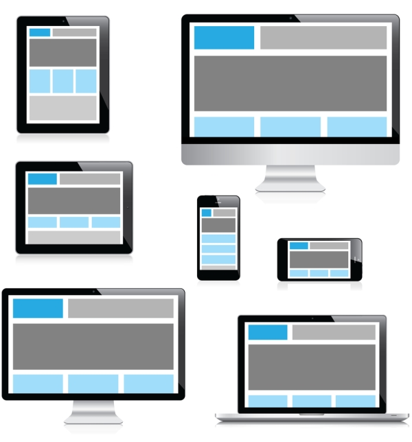
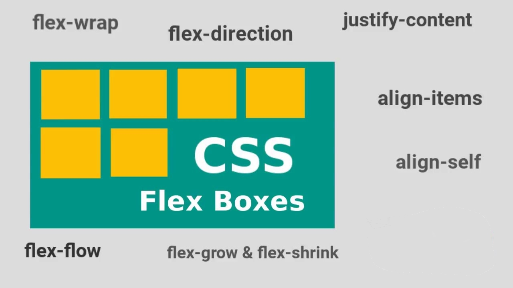
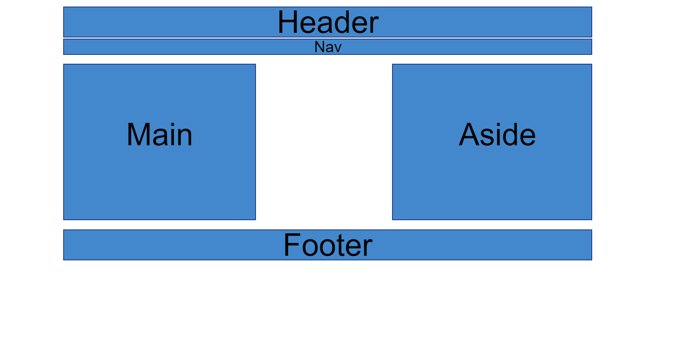

Css Layout
Responsivt design
Responsivt design er med på å gi en positiv innvirkning på hvor ofte det er nødvendig å oppdatere nettsiden. Med media queries vil det være med på at siden vil skaleres automatisk i forhold til brukerens skjerm og størrelse. Det man må tenke på er at innholdet vil bli veldig annerledes på mindre skjermer forhold til større og derfor er det best å skrive teksten lengre enn bredere. Er lettere for en med mobil å scrolle opp og ned enn å måtte scrolle til høyre og venstre for å lese innholdet. Med mobilbrukerer må man også tenke på touch ettersom man ikke har muligheten til å hovere over noe på en mobil som man har med pc. Mobilens visning av en nettside slåss ofte om brukerens oppmerksomhet, så ofte er det greit å lage en hamburgermeny i forhold til vanlig på pc. Uten responsivt design hadde ikke nettsiden passet for alle ulike skjermstørrelser. Det fins ulike tagger som er den del av responsivt design som hjelper til med ordning av nettsiden. Hovedsakelig er det bruken av Flexbox og Grid de fleste kjenner til. Disse to er med på å stabilisere innholdet på nettsiden, slik at det lettere å holde orden.
CSS Flexbox
Flexbox er en av to som kan hjelpe til å kunne endre en nettside forhold til skjermstørrelse og egen design måte lettere. Flexbox lager man med å sette opp en så kalt "parent container" som styrer selve innholdet som skal være inni flexboxen. Inni "container" kan man lage flere "child items" som på en måte er underkategorier til hovedkategorien som er container. En av de mest fine tingene med flexbox er den har evnen til justere seg etter visnings forholdene. Den kan enten graderes eller degraderes i størrelse for å utfylle nettsiden best mulig. Flexbox er en en dimensjonal med at den kun legger ting enten horisontalt eller vertikalt på aksen. Dette avgjøres ved å velge om du vil det skal være row eller column based. Det gjør at alt innhold som ligger innenfor container vil automatisk justeres i forhold til skjermstørrelsen og de rammene av siden innholdet ligger innenfor. Dette er noe som vil være med på å gjøre at innholdet blir bedre vist til brukere på alle ulike enheter med ulik skjermstørrelse.
CSS Grid
Grid er også noe som skal være til hjelp til at innholdet blir sotert. I forhold til flexbox er Grid to dimensjonal der den går langs to akser horisontalt eller vertikalt. Du har da celler med items som blir definert av rader eller kolonner i hva du velger gridden skal styre. Grid utgjør det utifra en grid-template-area som markerer selve området hvor gridden skal foregå og brukes. Etter å ha basert area kan man gi hvert element sin area på hvor den skal gå i forhold til selve templaten du har lagd. Dette er hvordan grid finner ut av hvordan innholdet skal plasseres på nettsiden.
Eldre bruk før Grid og Flex
Rammeverk (Old school)
Rammeverk er noe som består av flere elementer som lages utifra ren CSS kode. Rammeverk inneholder elementer som er av den eldre type før grid og flex layout. Rammeverk er ferdiglaget CSS som strukturerer HTML Elementene i rammeverk er:
- Bootstrap
- Foundation
- 960 Grid system
- Unsematic
- Bulma
- Pure CSS
Float, margin og box-modell
Før grid og flex måtte man bruke mer CSS for å skape den layouten man ville oppnå for sin nettside. Flex og Grid layout ble ikke introdusert før i CSS3 og før det måtte man bruke mere CSS for å skape hvor ting skulle være og hvor ting skulle forholde seg på siden. Eldre metodene som ble mer brukt, men som fortsatt brukes er margin og float. Med margin kunne man bestemme hvor langt eventuelt elementet skulle flytte seg på siden. Skrev du margin-left: 200px; så flyttet den som sto innenfor diven, taggen seg 200 px mot høyre ettersom du ba om det skulle være 200px mer mellomrom mellom innholdet og border på venstre side. Man kunne velge margin og ta for alle sider, men som regel var det lettere å ta for hver vinkel med left, right, top og bottom. Med float gjorde det at man sa hvor selve teksten skulle flyte på siden i forhold til border rundt. For å lage gridden før brukte man så kalte box-modeller, disse ble igjen lagd ved hjelp av div. Div har ennå ikke gått ut, men man kan nå enklere lage med kortere kode enn en div med id for hvert enkelt box element. Dette er hvordan man gjorde det når CSS1 kom, men etter CSS3 har ting blitt mye enklere ved hjelp av grid og flex. Man slipper å bruke div for alt og lage enkle box-modeller. Før var det wrapper og boxer, nå er det flex all the way med flex container med flex items. Man bruker fortsatt text-align, ulike font forandringer og slike ting, men poenget er at med Grid og flex skal man klare å skape en side som enkelt kan endres med kun få trykk uten å måtte forandre mye i forhold til margin på alle ulike kanter. Grid layout er kun i start versjoner, så fremtiden ser nok bare mer og mer lysere ut for at grid og flex er for å bli, men vil bli mer og mer enklerer å bruke mer årene som kommer slik at forandring forhold til layout på en nettside skal kunne skapes på mere enklere måter enn da først CSS ble presentert.
Kilder:
- Tom Heine Nätt, E. M. (2017). Webutvikling. Gyldendal.
- Pdf fra forelesning om CSS Repsonsivt design, CSS Grid og flexbox